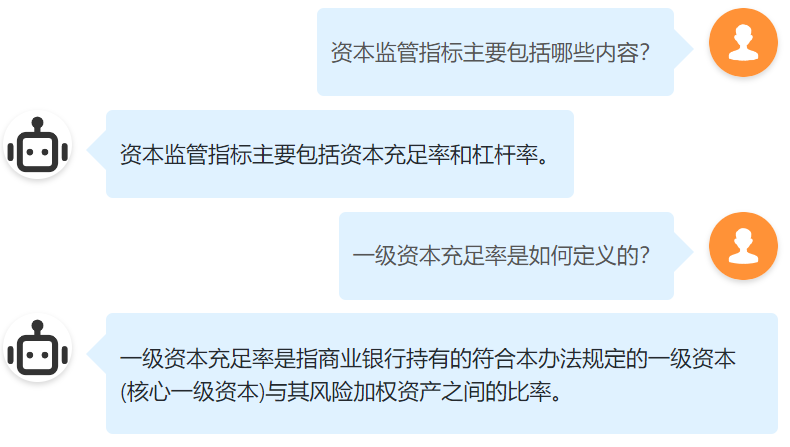
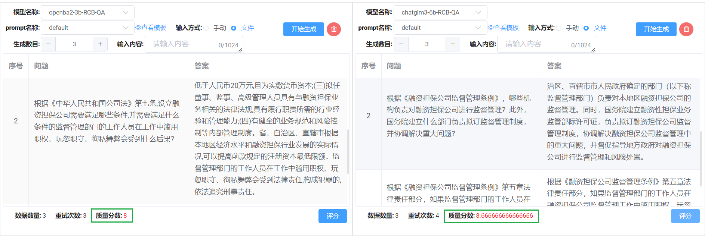
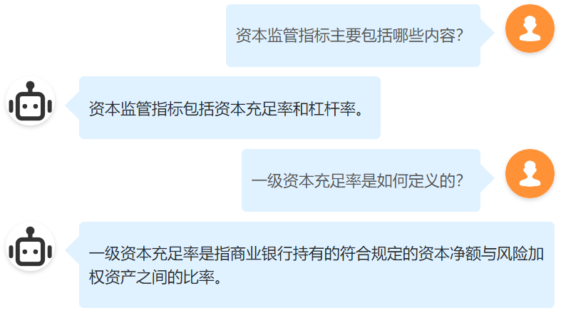

02 / FINANCE LLM
金融垂域模型训练
为金融客服业务问答与问答对构建场景，完成开源模型的适配、训练、推理与部署。
PROBLEM
业务问答需要领域适配
金融客服问答与问答对构建场景需要模型理解垂域知识，并在国产算力环境中提供可用的推理能力。
METHOD
适配、微调与部署
完成模型适配、金融垂域任务训练及昇腾 NPU 推理部署，并针对问答和问答对构建进行评测。
RESULT
模型效果与性能提升
金融垂域任务平均微调效果最高较 GPT-3.5 提升 10.8 个百分点；Qwen2.5-14B 在 NPU 平台推理效果提升 35.1%。
6已适配组织
21开源模型适配
35.1%NPU 平台推理提升
20–3014B 单卡支持人数

训练与部署结果
- 金融垂域任务平均微调效果最高较 GPT-3.5 提升 10.8 个百分点。
- Qwen2.5-14B 模型适配至昇腾 NPU 算力平台后，推理效果提升 35.1%。
- 14B 模型单卡以 20 token/s 为基准，最高可支持 20–30 人使用。

PROJECT VISUALS


